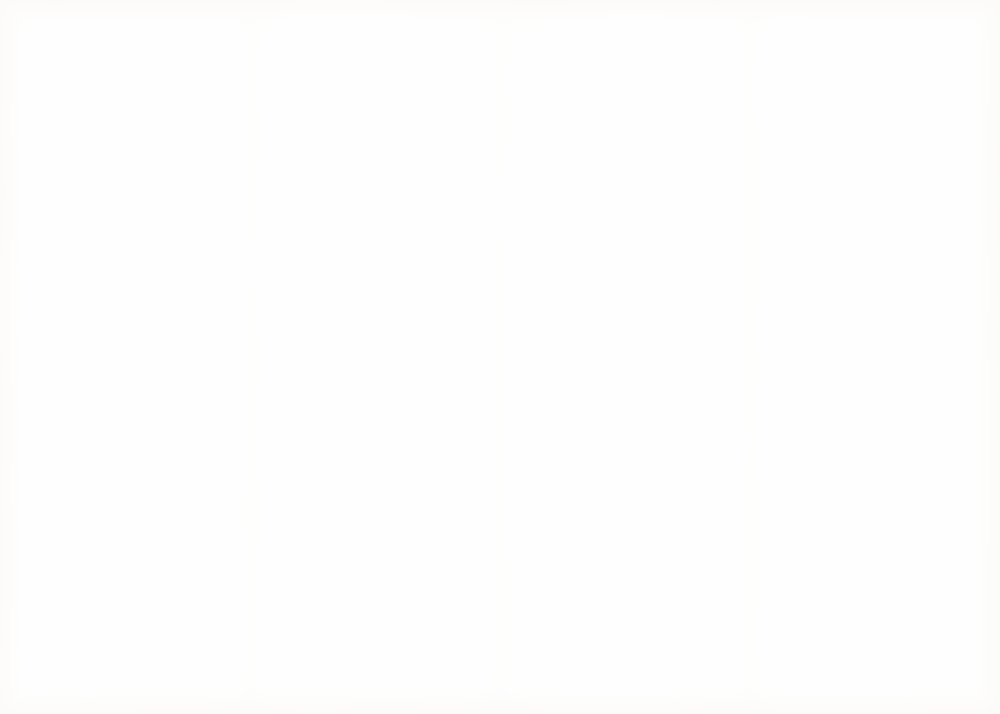

VAN CORTLANDT PARK
Midnight. The conclave.
WOODLAWN
Over the wall to the el.
TREMONT
Fire on the tracks. Orphans turf.
96 ST
Change here. Furies in the park.
UNION SQ
Lizzies upstairs. Punks on skates.
CONEY ISLAND
Stillwell Av. Last stop. Breakfast.
Bronx to Coney Island
THE LONG RIDE HOME
One long night, by train and on foot
North is to the left. Sunrise, far right.
North is to the left. Sunrise, far right.
1
COUNTERSoft pretzel bites.60
Brushed with butter, served warm. Sharp cheddar dip, yellow mustard.
Street-cart corn.50
Charred ribs off the cob, chili butter, lime, smoked salt.
2
GRILLConey chili dogs1.79
Griddled beef franks, beef chili, onion, mustard. Shoestring fries.
Sausage hero1.75
Sweet Italian sausage, fried peppers and onions, seeded roll.
Egg on a roll.85
Two fried eggs, salt and pepper, a kaiser roll. Ready at first light.
3
COLDIce cream sandwich.75
Vanilla between chewy chocolate cookies, dipped in dark chocolate.
Lemon ice.35
Shaved and tart, in a paper cup.
4
FOUNTAINCherry cola.40
Ice-cold cola, cherry syrup, a squeeze of lime.
Chocolate egg cream.50
Chocolate syrup, cold milk, seltzer. No egg, no cream.
Coffee, regular.30
Milk and two sugars, the way the boardwalk takes it.

